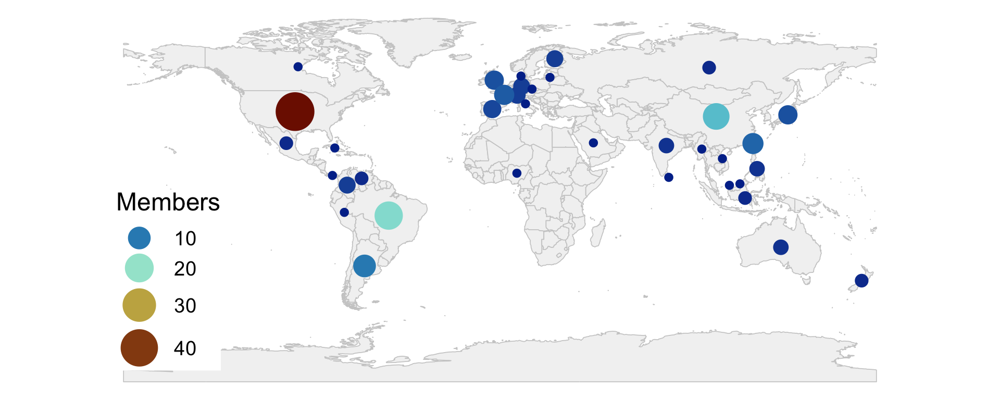
PPG II、そしてその先へ：シダ植物におけるコミュニティ主導型分類体系の構築
ニッタジョエル* (千葉大・院・国際)
Carl J. Rothfels (Utah State University)
Harald Schneider (Xishuangbanna Tropical Botanical Garden)
Eric Schuettpelz (Smithsonian
Institution)
2026.03.07
JSPS 第25回大会
OB09
Outline
- PPG の概要
- PPG II フェーズ 1（第22回大会発表のアップデート）
- PPG II フェーズ 2（新しい）
- 今後の展開
スライドのアクセスは⬆︎から
PPG の概要
分類体系は生物学者の共通言語
- 共通言語がないと、話が
通じない
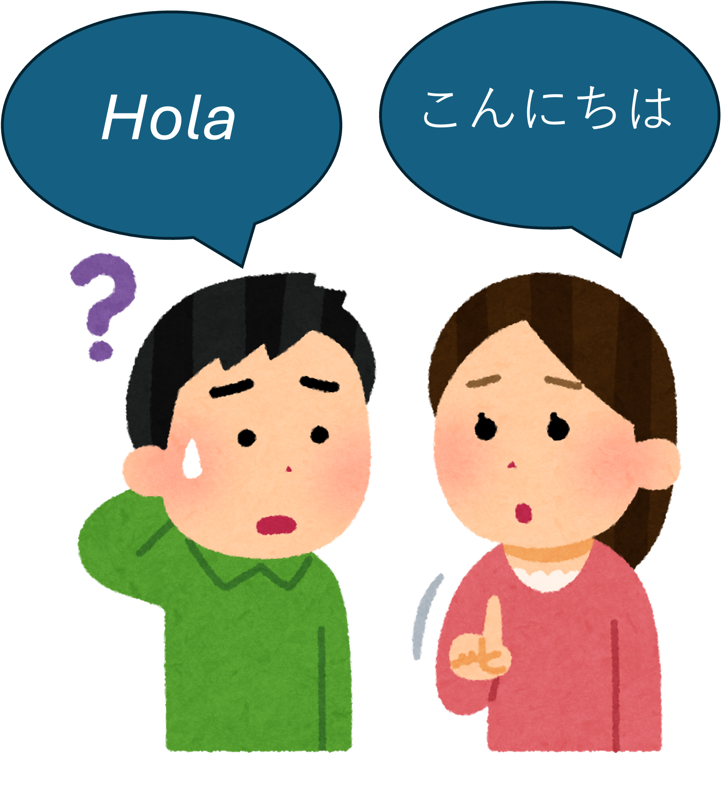
分類体系は生物学者の共通言語
共通言語がないと、話が
通じない分類体系は、種についての「共通言語」を与えて
くれる
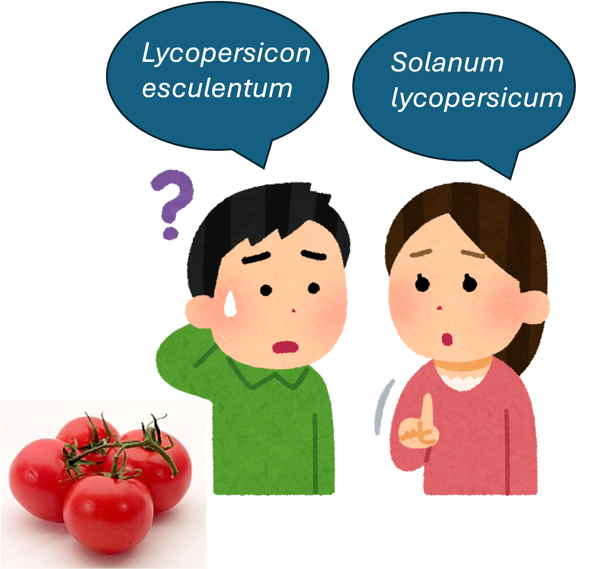
分類体系は生物学者の共通言語
APG（Angiosperm Phylogeny Group）の分類体系は、とくに被子植物を扱う植物学者にとって重要
では、シダ植物は？
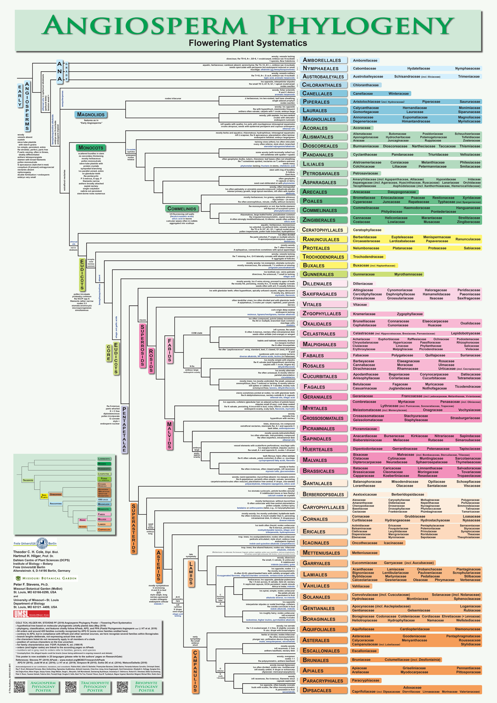
分類体系は生物学者の共通言語
APG（Angiosperm Phylogeny Group）の分類体系は、とくに被子植物を扱う植物学者にとって重要
では、シダ植物は？
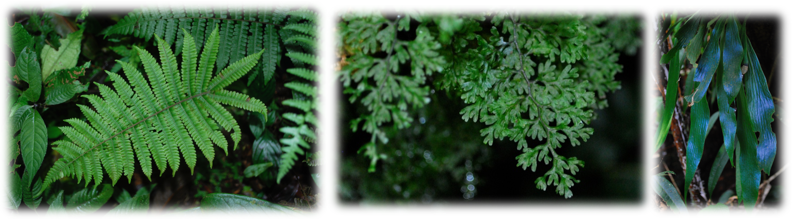
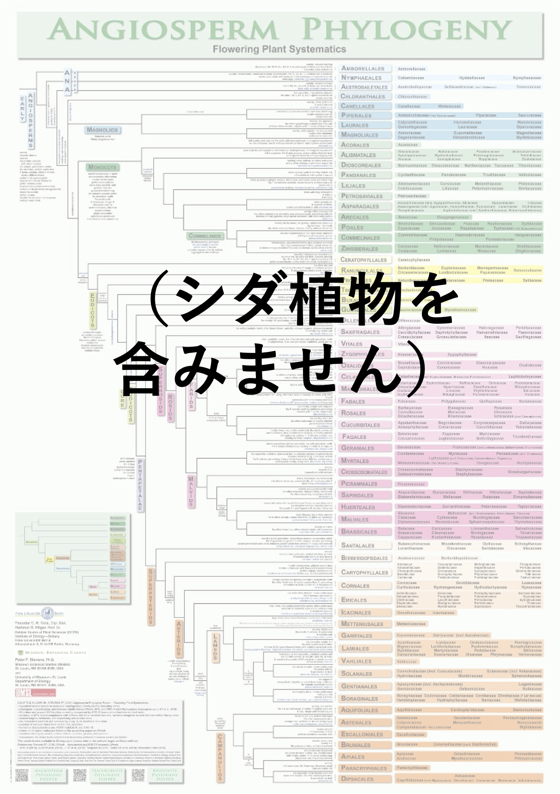
シダ植物には PPG（Pteridophyte Phylogeny Group）がある
- PPG は出発が遅かった
- APG：1998年、主要アップデート4回
- PPG：2016年、まだ更新なし
- コミュニティ主導
- APG：著者13名
- PPG：著者94名
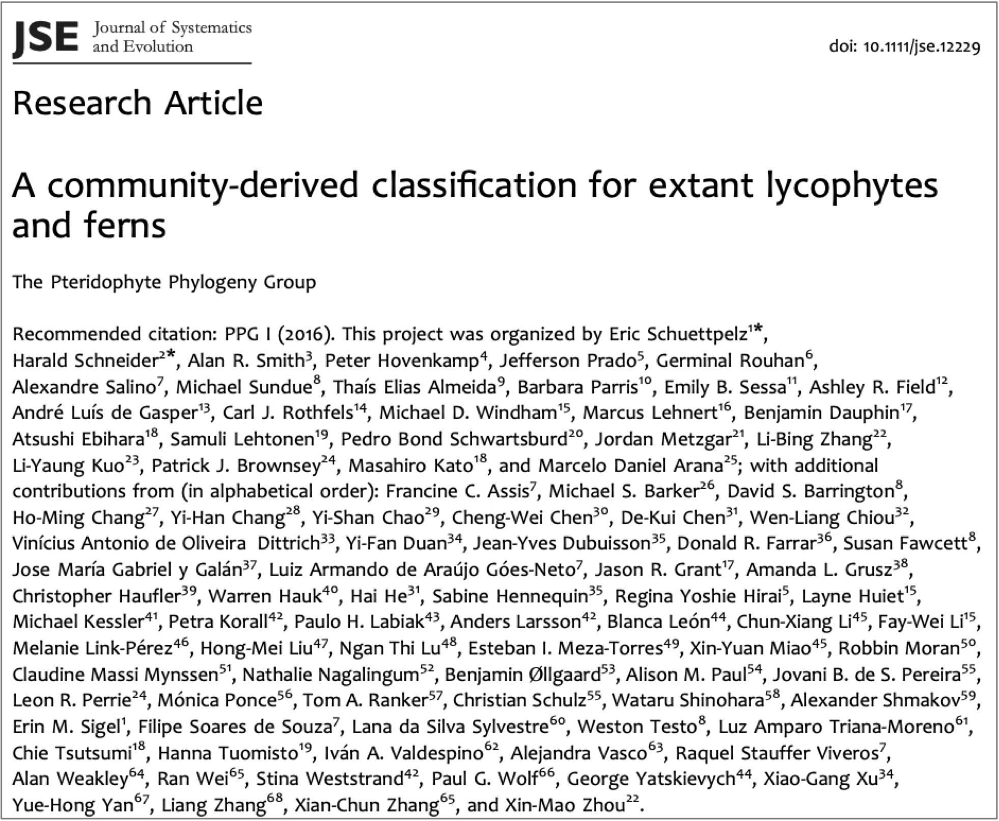
PPG は系統に基づく
- 分類群を認識する一次基準は単系統性（monophyly）
PPG は系統に基づく
分類群を認識する一次基準は単系統性（monophyly）
シダ植物の系統に関する現在の理解は、非常に多くの研究に支えられている
PPG II に向けて
PPG Iが発表された2016年以降、属以上で約80の新名が公表された
これらの名称を採用するかどうか、議論を通して
決める必要があるPPG II に向けた属以上の分類体系更新は2023年5月に開始（「フェーズ1」）
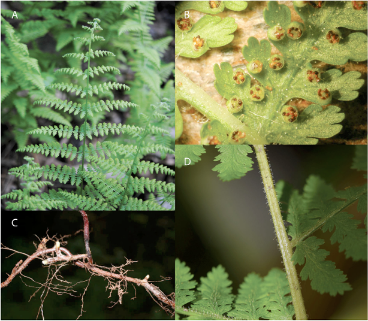
親属 Sitobolium（旧 Dennstaedtia）
Triana-Morena et al. (2022)
PPG II のコミュニティ
37 ヶ国から 171 名の現役メンバー
運営委員会：5名
第20回国際植物会議（2024年・スペイン・マドリッド）にて

PPG II フェーズ 1
PPG II（フェーズ1）の新しい議論
プラットフォーム
- PPG I では、議論の中心はメール
- 公開されない
- 記録が残らない
PPG II（フェーズ1）の新しい議論
プラットフォーム
- PPG I では、議論の中心はメール
- 公開されない
- 記録が残らない
- PPG II では GitHub を使用
- 議論をホストする機能が充実
- 議論はすべて公開され、恒久的に閲覧できる
提案（Issue）一覧 https://github.com/pteridogroup/ppg/issues
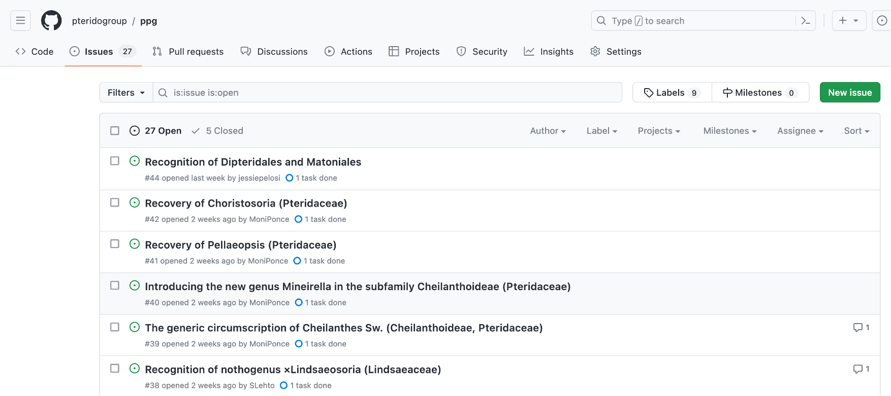
誰でも提案を提出できる
- 提案の条件
- PPG I に対する変更
であること - 国際藻類・菌類・植物命名規約（ICN）に基づき
有効に公表されていること
- PPG I に対する変更
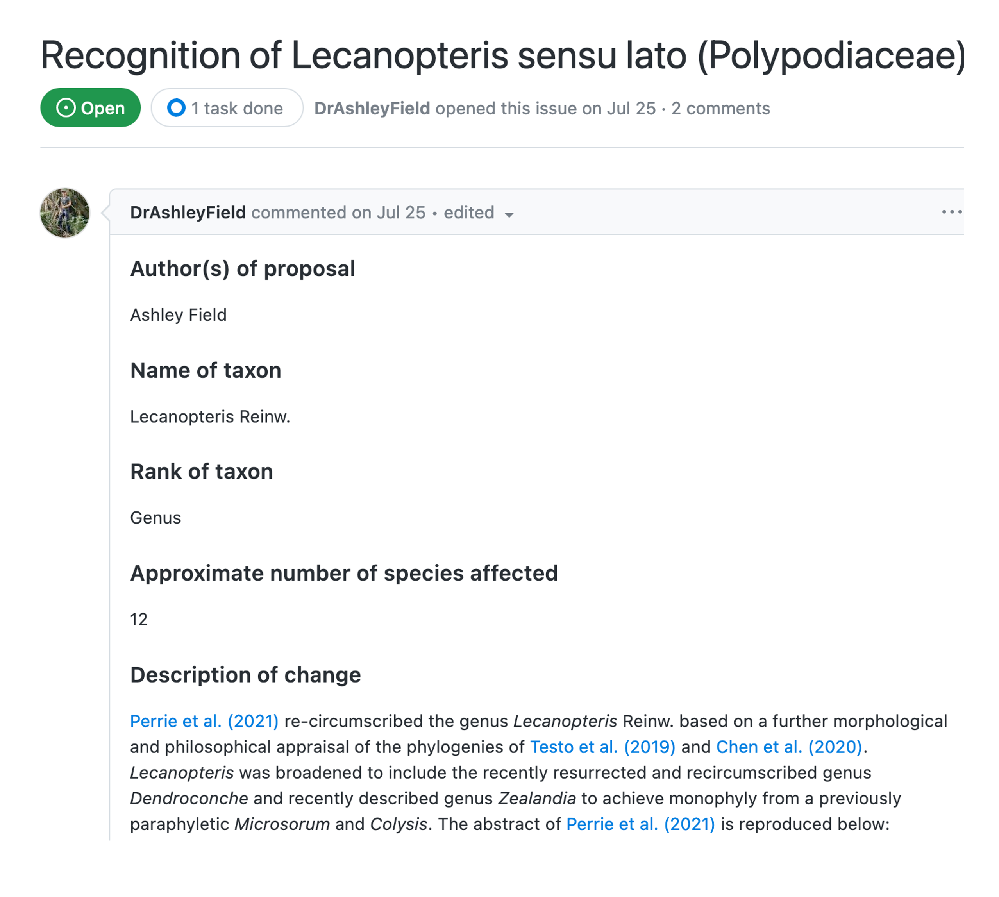
議論はすべて公開される
- 誰でも閲覧・参加でき、記録は恒久的に残る
- 各提案には、投票前に少なくとも1か月の議論期間
がある
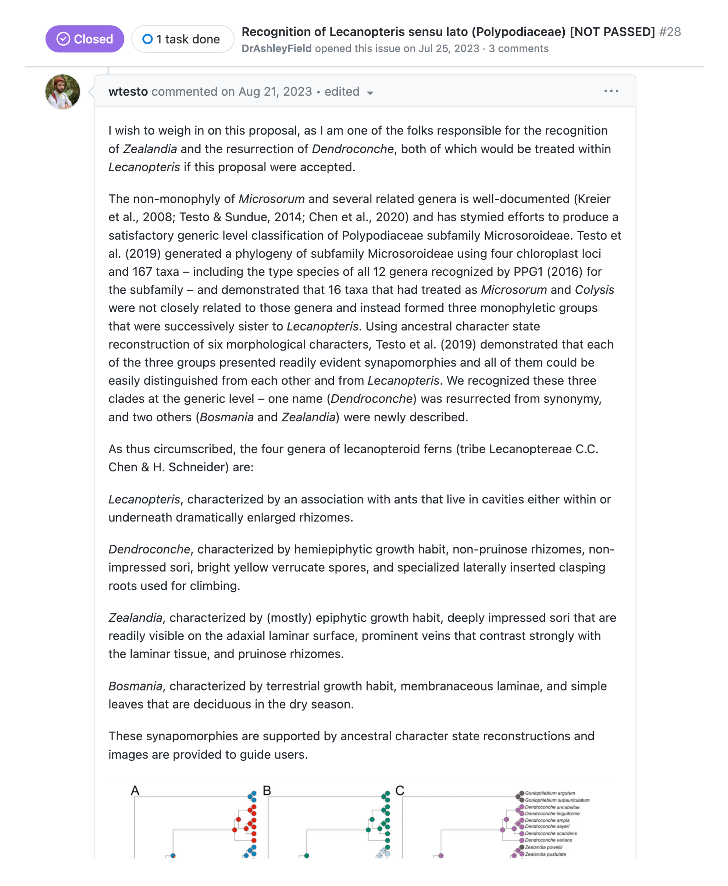
投票は Google Forms で実施
- 可決には \(2/3\) 以上の賛成が必要
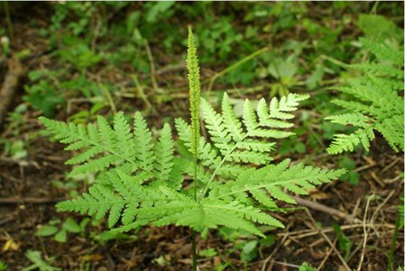
親属 Sahashia（旧 Botrychium）
写真：V.S. Volkotrub https://www.gbif.org/occurrence/2005351333
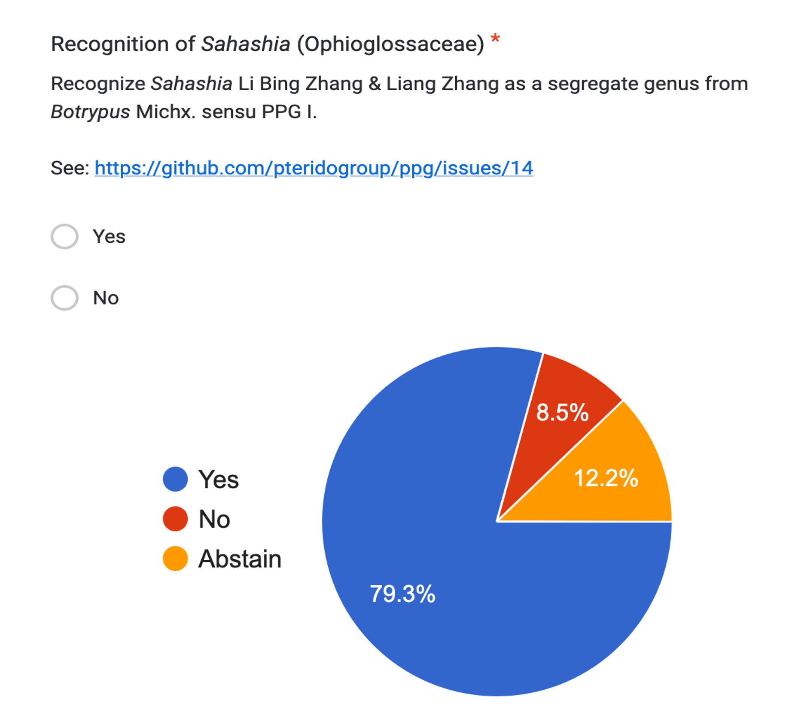
議論の目標を達成した
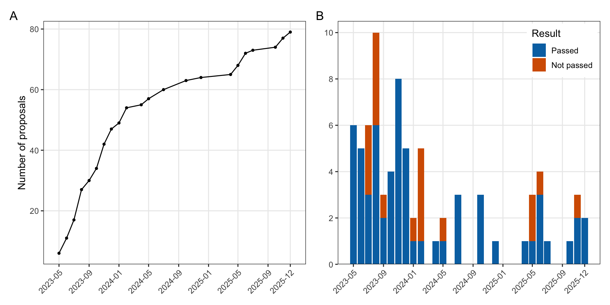
2023年5月以降、提案 79件 を受けて、議論し、投票を行った（目標：約80分類群）
PPG II は完成された
TAXON に 2026年3月4日
投稿済み37 ヶ国を代表する
171 名の著者
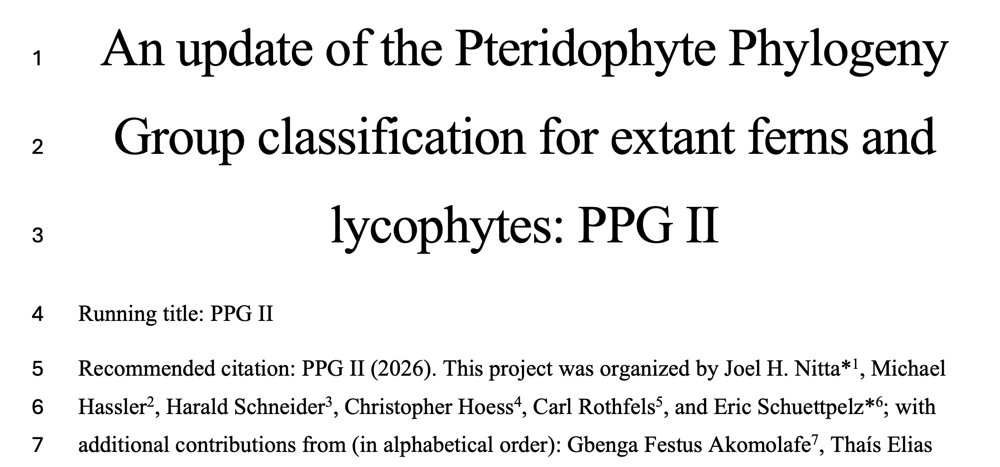
…
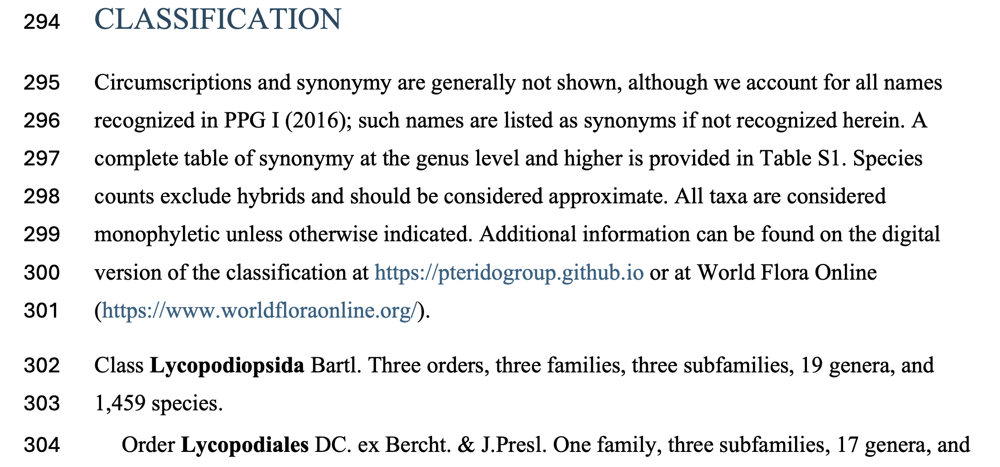
PPG II 分類の概要
| Rank | PPG II | PPG I |
|---|---|---|
| 綱 | 2 | 2 |
| 亜綱 | 4 | 4 |
| 目 | 14 | 14 |
| 亜目 | 6 | 6 |
| 科 | 53 | 51 |
| 亜科 | 36 | 28 |
| 属 | 370 | 337 |
PPG II フェーズ 2
フェーズ2：種レベルデータの
キュレーション
PPG II は種レベルのデータも含む（PPG I は属以上のみ）
種数が多すぎて、すべての変更を投票で決めるのは現実的ではない
PPG メンバーが「Curator（キュレーター）」として参加し、 専門とする分類群（属または科）の種を維持・更新する
PPG は WFO と連携してデータを管理
World Flora Online（WFO）は、全植物を対象とするグローバルな分類学データベース
PPG は WFO 上でシダ植物のデータを管理している
WFOには、分類学データベース編集ツール「Rhakhis」 がある
Rhakhis による共同編集
分類学上のルールを強制できる
クラウド型なので、ファイルのやり取りが不要
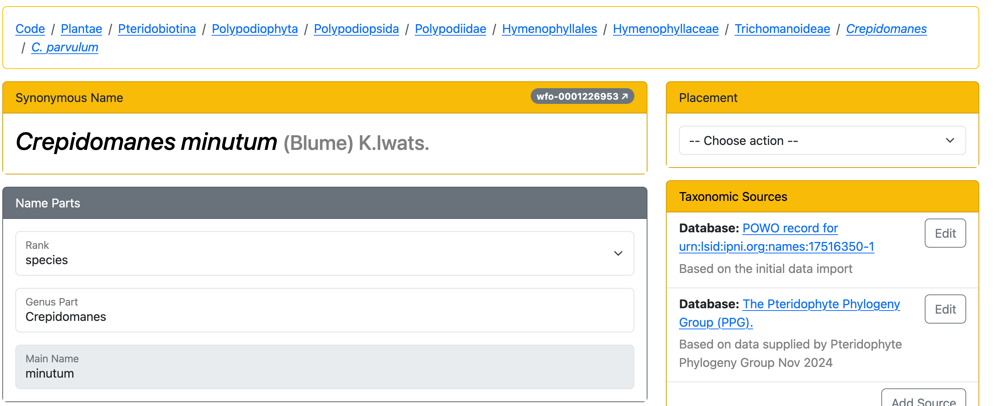
オープンでコミュニティ主導の利点
- データベースの更新をより高頻度で行える
- また10年間を待つ必要はありません！
- PPG 2.0.1, 2.0.2, など
- 多くの専門家で作業を分担でき、 データの品質と最新性を保ちやすい
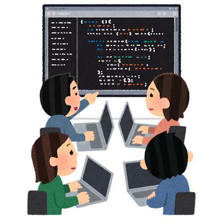
属の大多数にキュレーターが付いている
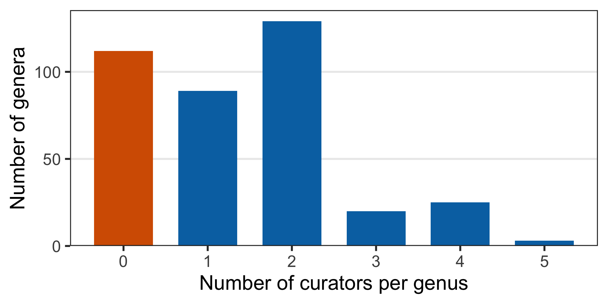
2026年2月17日の開始以降、計 59 名のキュレーターのご参加により属の 70.4% をカバー
今後の展開
PPG を参照できる場所
- World Flora Online
- 年2回程度のスナップショット
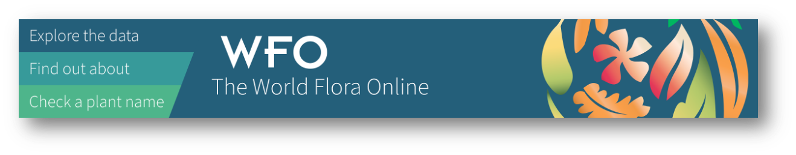
- PPG Website
- より頻繁な更新
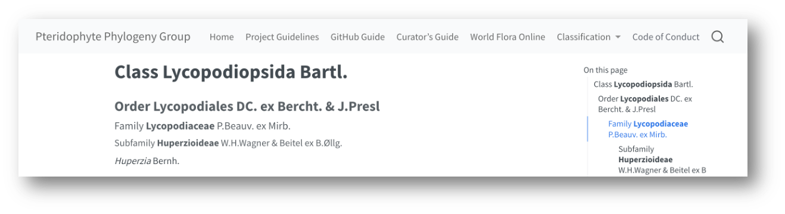
- Rhakhis
- ライブデータ
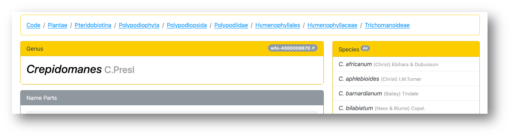
まとめ
PPG は、オープンで協働的なアプローチで分類体系を構築している
ここで紹介した方法により、PPG は系統分類学研究の進展に合わせて頻繁に更新を発行できるようになる
謝辞
- Alan Elliott (WFO)
- Roger Hyam (WFO)
- 第20回国際植物会議の主催者
- 2025年 Botany 学会の主催者